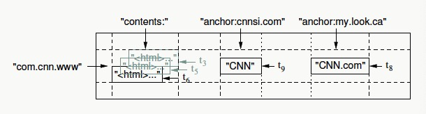
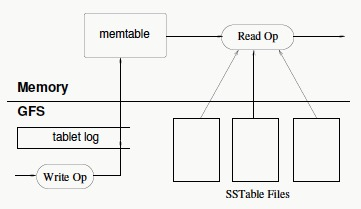

Bigtable
A distributed storage system for managing structured data that is designed to scale to a very large size.
Data Model

- Rows
- read/write under a row key is atomic
- row keys are in lexicographic order
- tablet(row range) is unit of distribution and load balancing
- Column families
- basic unit of access control
- column family number is small and rarely change, while column number is unbounded
Implementation
-
Tablet Location
- three-level hierarchy: Chubby file for root tablet, METADATA tablets, user table
- client library caches tablet location(search recursively if cache is invalid)

-
Tablet Assignment
- tablet server creates file in Chubby directory; master monitors the directory to discover tablet server
- when master starts, it creates file in Chubby directory, communicates with live tablet servers and scans METADATA table
-
Tablet Serving
- updates: commit log -> memtable -> SSTables
- METADATA table stores metadata to recover a tablet(SSTables and redo points)

- Compaction
- minor compaction: when memtable size reaches threshold, convert current memtable into a SSTable and make a new one
- merging compaction: periodically merges a few SSTables and memtable into a SSTable
- major compaction: merges all SSTables into a SSTable(no deletion entry)
Refinements
- locality groups: group multiple column families into locality group; seprate locality groups into different SSTables
- compression
- bloom filter
- commit-log
- use single commit log per tablet server, co-mingling mutations for different tablets
- For recovery, the commit log is sorted first, so new tablet server doesn't need to read full log file